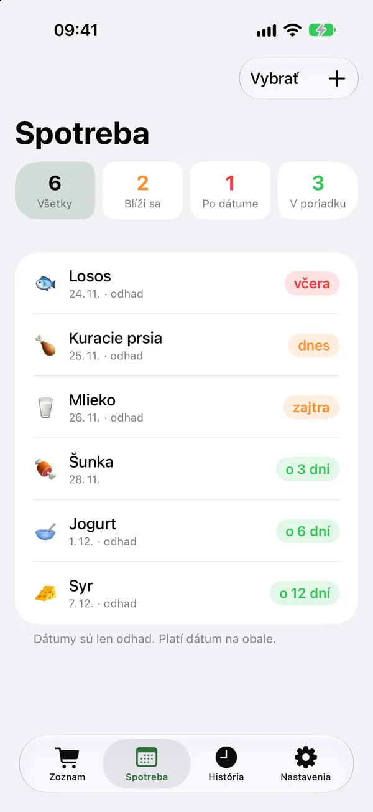
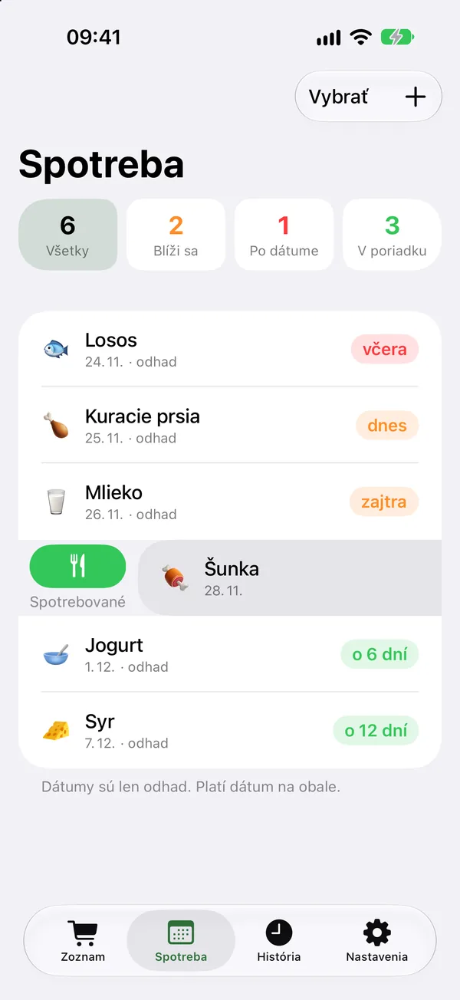
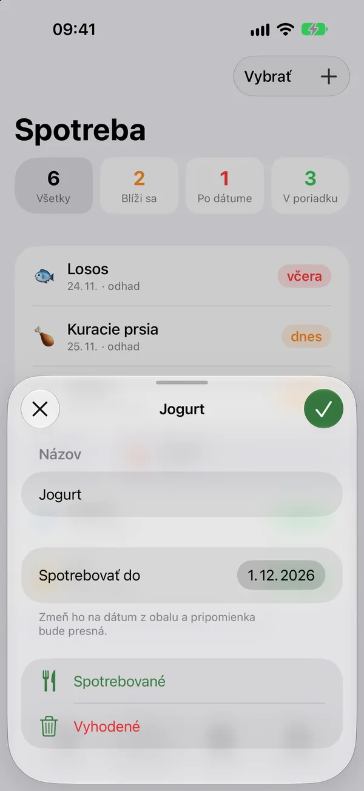

Ako sledovať dátum spotreby potravín v iPhone
-
Krok 1 Otvorte Spotrebu
Ťuknite na kartu Spotreba. Dlaždice Všetky / Blíži sa / Po dátume / V poriadku slúžia zároveň ako filter.

-
Krok 2 Označte Spotrebované alebo Vyhodené
Potravinu potiahnite doprava → Spotrebované, alebo doľava → Vyhodené.

-
Krok 3 Upravte dátum v detaile
Ťuknutím na potravinu otvoríte detail s dátumom Spotrebovať do a tlačidlami Spotrebované / Vyhodené. Dátum označený „odhad“ upravte podľa obalu – platí vždy dátum na obale.

Časté otázky
Vidí Spotrebu aj rodina?
Áno, Spotreba sa zdieľa s domácnosťou, takže všetci vidia, čo treba zjesť.
Ďalšie otázky nájdete na stránke Podpora.